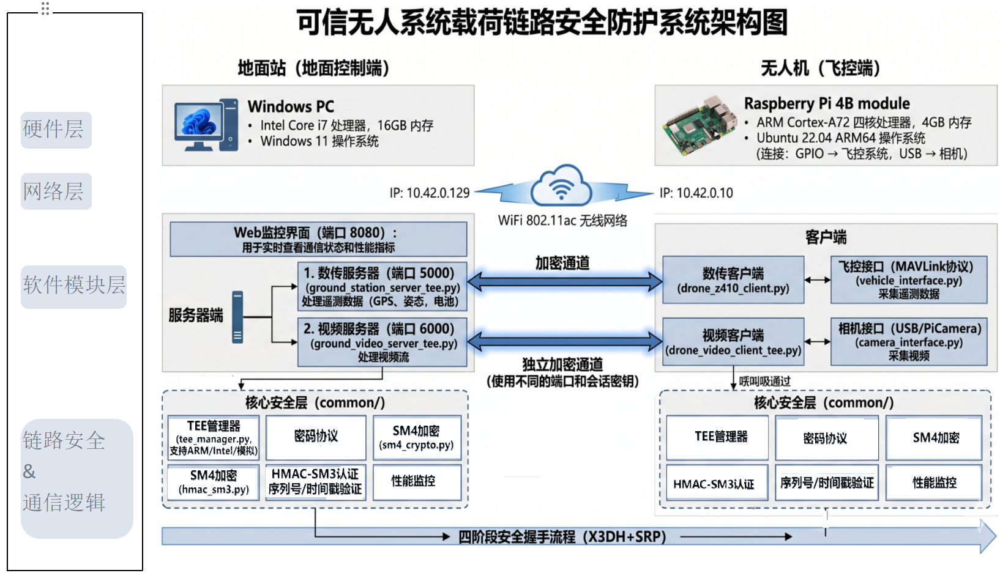
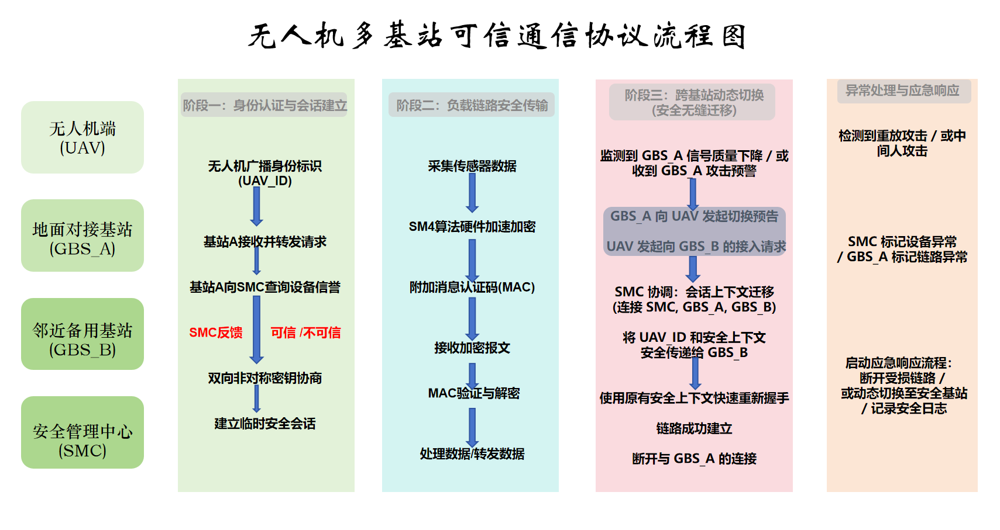

未认证节点进入任务网
仅依赖网络可达无法证明设备运行状态或操作者身份，伪造端点可能参与后续会话。
安全问题并不止于“把数据加密”。设备身份、密钥材料、中继可见范围和覆盖缺口都会决定一次任务是否可信完成。
仅依赖网络可达无法证明设备运行状态或操作者身份，伪造端点可能参与后续会话。
遥测位置、控制状态和视频载荷必须在传输前获得机密性、完整性和新鲜性保护。
跨基站或临时节点接力时，单个中继不应获得端点握手材料、业务明文或完整路径。
地面站、无人设备、目录服务与中继节点被拆为可运行模块；安全机制嵌入数传、图传和 Web 展示闭环，而非停留在独立算法演示。

系统先建立端点安全根，再根据网络条件选择直连、跨基站或混合接力的承载路径。
状态机依次完成模拟 TEE 远程认证、SRP-PAKE、SRP 保护的 X3DH 身份材料交换与应用层数据保护。任一阶段失败，临时状态和密钥材料会被清除。
源端从目录筛选候选中继，经 VRF 生成可验证路径，与每一跳执行 ntor 风格 AKE，随后建立洋葱电路并在其中完成四阶段握手。
固定基站、无人机和地面机器人共同组成候选图，路径评分综合可达性、带宽、RTT、丢包、电量、可信度与节点类型。
两套协议按先后关系工作：多跳场景先完成可验证路径建链，再在受保护电路中传递端点认证与载荷数据。


以下数据来自论文中的运行日志和集成测试，分别覆盖直连图传、独立中继进程上的协议层三跳，以及混合路径规划。
安全会话建立耗时。
63.2 s 内发送 1757 帧的平均值。
遥测样本均通过 MAC 与时间戳校验。
地面站解密后的前端滑动窗口统计。
验证固定基站和无人机中继共同参与建链。
当前作品已完成地面站、树莓派无人机端、目录服务、独立中继进程、数传、图传和 Web 展示的原型闭环。它证明协议与工程设计可行，而非宣称已完成生产级大规模部署。
论文明确保留三项后续工作：将模拟 TEE 迁移至真实可信硬件；在真实 4G/5G 外场与更多物理中继上验证移动切换；补充批量重放、篡改和异常中继注入测试。